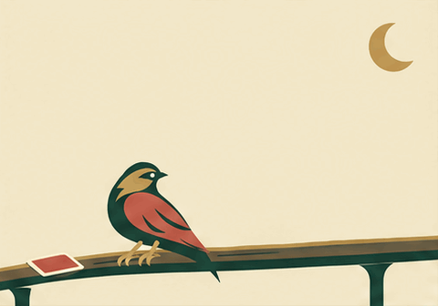

Watch
Two feet grip the rail as the bird turns its attention to the sky.
Open original Watch GIFBLINDSIDE · CANDIDATE FICTION
The Nightjar watches above a lone card, then leaves the rail for the open sky.

Two short chapters, 9.6 seconds. Native GIF plays once; reduced motion shows the opening illustration. The chapter cut has visible redraw drift. No pause or seek controls.
Two feet grip the rail as the bird turns its attention to the sky.
Open original Watch GIFThe feet release, connected wings open, and the bird glides above the vacated perch. The card stays behind.
Open original Away GIFA future story study, not accepted game history or a gameplay effect. Broad wing shapes simplify during the beat; the whole bird stays in view.
Sources and review · Open assembled native GIF · Opening SVG